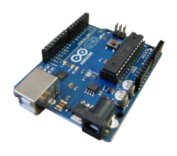
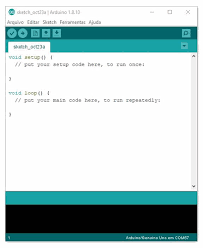

Eletroeletrônica
resistores e codigos de cores
Pesquisa sobre Resistores e Códigos de Cores
O que são Resistores?
Os resistores são componentes eletrônicos que limitam a corrente elétrica em um circuito. Eles são utilizados em diversas aplicações eletrônicas, desde simples circuitos até sistemas complexos.
Código de Cores dos Resistores
O código de cores é um sistema de identificação utilizado para indicar o valor da resistência e a tolerância dos resistores. Cada cor corresponde a um número específico, que é utilizado para calcular o valor total do resistor.
Cores e seus Valores
Valores Associados
- Preto: 0
- Marrom: 1
- Vermelho: 2
- Laranja: 3
- Amarelo: 4
- Verde: 5
- Azul: 6
- Violeta: 7
- Cinza: 8
- Branco: 9
Tolerâncias
- Marrom: ±1%
- Vermelho: ±2%
- Verde: ±0,5%
- Azul: ±0,25%
diodo led e display sete segmentos
O que é um Diodo LED?
Um Diodo Emissor de Luz (LED - Light Emitting Diode) é um componente eletrônicos que emite luz quando uma corrente elétrica passa por ele. Os LEDs são altamente eficientes e têm uma longa vida útil em comparação com as lâmpadas incandescentes tradicionais.
Características dos Diodos LED
- Baixo consumo de energia: Os LEDs consomem muito menos energia do que as lâmpadas tradicionais.
- Durabilidade: A vida útil de um LED pode superar 25.000 horas de uso.
- Variedade de cores: Os LEDs estão disponíveis em várias cores, dependendo do material semicondutor utilizado.
O que é um Display de Sete Segmentos?
O display de sete segmentos é um dispositivo eletrônico que pode representar os números de 0 a 9 usando um arranjo de LEDs dispostos em forma de figura 8. Eles são amplamente utilizados em aparelhos eletrônicos para mostrar números, como em calculadoras e medidores digitais.
Estrutura do Display de Sete Segmentos
Um display de sete segmentos é composto por sete segmentos individuais (LEDs) que podem ser acesos em diferentes combinações para formar os números desejados:
Códigos de Ativação
Para acender os segmentos do display, geralmente utilizamos um código binário. Aqui está um exemplo de como representar os números de 0 a 9:
- 0: 1111110
- 1: 0110000
- 2: 1101101
- 3: 1111001
- 4: 0110011
- 5: 1011011
- 6: 1011111
- 7: 1110000
- 8: 1111111
- 9: 1111011
Tinkercad
O que é o Tinkercad?
Tinkercad é uma plataforma online de design e simulação de circuitos, desenvolvida pela Autodesk. É especialmente popular entre iniciantes em eletrônica e programação, pois permite criar projetos de maneira fácil e intuitiva, sem a necessidade de hardware físico. Os usuários podem arrastar e soltar componentes eletrônicos, como resistores, LEDs e microcontroladores, para construir circuitos virtuais.
Principais características do Tinkercad:
- Simulação de Circuitos: Permite testar circuitos em um ambiente virtual, ajudando a entender seu funcionamento antes da montagem física.
- Integração com Arduino: Os usuários podem programar um Arduino virtualmente e ver o resultado imediatamente em tempo real.
- Interface Amigável: A interface simples e colorida facilita a criação e edição de projetos mesmo para aqueles sem experiência prévia.
- Material Didático: O Tinkercad oferece tutoriais e guias que ajudam novos usuários a aprenderem sobre eletrônica e programação.
Placa Arduino
O que é uma Placa Arduino?
A placa Arduino é um microcontrolador de código aberto que facilita a prototipagem de projetos eletrônicos. Existem diversas versões de placas Arduino, como Arduino Uno, Mega e Nano, cada uma com diferentes capacidades e números de pinos. O Arduino é ideal para criar dispositivos interativos, como robôs, sensores e sistemas automatizados.
Principais características de uma Placa Arduino:
- Microcontrolador: A maioria das placas Arduino usa o microcontrolador ATmega, que é programável e executa o código enviado pela IDE.
- Pinos de Entrada/Saída: As placas possuem pinos digitais e analógicos para conectar sensores, atuadores e outros componentes.
- Conexão USB: Permite a comunicação entre a placa e o computador para programação e fornecimento de energia.
- Hardware de Código Aberto: Qualquer pessoa pode usar, modificar e compartilhar os projetos criados com Arduino.
Programa IDE Arduino
O que é a IDE Arduino?
A IDE Arduino (Ambiente de Desenvolvimento Integrado) é o software utilizado para escrever, compilar e carregar o código (sketches) nas placas Arduino. A IDE possui uma interface simples e suporta a linguagem de programação C/C++, permitindo a criação de programas que controlam os componentes conectados à placa.
Principais características da IDE Arduino:
- Editor de Código: Um editor simples onde os usuários podem escrever e editar seu código, com destaque de sintaxe para facilitar a leitura.
- Compilação de Código: A IDE verifica e compila o código, transformando-o em um formato que a placa Arduino pode entender.
- Carregamento para a Placa: Permite enviar o código diretamente para a placa através de uma conexão USB, facilitando a programação.
- Bibliotecas Integradas: Oferece uma ampla gama de bibliotecas que facilitam a programação de sensores, atuadores e outros componentes.
- Comunidade Ativa: A IDE Arduino é suportada por uma comunidade vibrante, com muitos tutoriais, exemplos de código e recursos disponíveis online.
O Tinkercad, combinado com as placas Arduino e a IDE Arduino, oferece uma poderosa ferramenta para aprender e experimentar com eletrônica e programação. Essa abordagem facilita a prototipagem e a simulação, tornando o aprendizado de conceitos eletrônicos acessível para todos.
Entrada e Saída Analógica e Digital no Arduino
O que é Arduino?
O Arduino é uma plataforma de prototipagem eletrônica de código aberto que permite desenvolver projetos interativos. Ele pode ler entradas do mundo real e transformar essas entradas em saídas que podem controlar luzes, motores e outros dispositivos.
Entradas Analógicas e Digitais
No Arduino, existem dois tipos principais de entrada: analógica e digital.
Entrada Analógica
A entrada analógica é utilizada para ler sinais que variam continuadamente, como a tensão de um sensor. O Arduino possui pinos de entrada analógica que podem ler valores de 0 a 1023 (10 bits), correspondentes a tensões de 0V a 5V.
- Exemplo de Sensor: Um sensor de temperatura que varia a sua voltagem de saída dependendo da temperatura ambiente.
- Pinos de Entrada Analógica: No Arduino Uno, os pinos A0 a A5 são pinos de entrada analógica.
Entrada Digital
A entrada digital é usada para ler sinais que têm apenas dois estados: alto (HIGH) ou baixo (LOW). A leitura digital no Arduino pode ser usada para botões, interruptores, e outros dispositivos que fornecem um sinal binário.
- Exemplo de Sensor: Um botão que, quando pressionado, envia um sinal de HIGH para o Arduino.
- Pinos de Entrada Digital: No Arduino Uno, todos os pinos digitais (0 a 13) podem ser usados como entradas digitais.
Saídas Analógicas e Digitais
Além das entradas, o Arduino também pode gerar saídas analógicas e digitais.
Saída Analógica
A saída analógica é utilizada para gerar um sinal de tensão que varia entre 0V e 5V. O Arduino usa a modulação por largura de pulso (PWM) para simular uma saída analógica. Isso é usado, por exemplo, para controlar a intensidade de luz de um LED.
- Exemplo de Aplicação: Controlar a luminosidade de um LED conectado a um pino de saída PWM.
- Pinos de Saída PWM: No Arduino Uno, os pinos 3, 5, 6, 9, 10 e 11 suportam saída PWM.
Saída Digital
A saída digital é usada para controlar dispositivos que têm dois estados, como LEDs e relés. O Arduino pode definir qualquer pino digital como saída e enviar sinais HIGH ou LOW.
- Exemplo de Aplicação: Acender ou apagar um LED conectado a um pino digital.
- Pinos de Saída Digital: Todos os pinos digitais (0 a 13) podem ser usados como saídas digitais.
arduino

IDE

Multímetro
O que é um Multímetro?
Um multímetro é um instrumento de medição que combina várias funções em um único dispositivo. Ele pode medir tensão (voltagem), corrente e resistência elétrica, e, dependendo do modelo, pode ter diversas outras funcionalidades, como teste de diodos e continuidade.
Para que serve o Multímetro?
O multímetro é uma ferramenta essencial para eletricistas, engenheiros e hobbistas em eletrônica. Aqui estão algumas de suas principais aplicações:
- Medir Tensão: Permite verificar a voltagem em circuitos elétricos, tanto em corrente contínua (DC) quanto em corrente alternada (AC).
- Medir Corrente: Utilizado para medir a corrente elétrica que flui através de um circuito, ajudando a diagnosticar problemas de sobrecarga ou falhas.
- Medir Resistência: Avalia a resistência de componentes e circuitos, útil para identificar se um resistor está funcionando corretamente.
- Teste de Continuidade: Verifica se há um caminho elétrico completo em um circuito, útil para identificar fios rompidos ou conexões ruins.
- Teste de Diodos: Permite verificar a funcionalidade de diodos, determinando se estão conduzindo corretamente.
Tipos de Multímetros
Existem dois tipos principais de multímetros:
- Multímetro Analógico: Utiliza um ponteiro e uma escala graduada para mostrar as medições. É menos comum hoje em dia, mas ainda é usado por alguns profissionais.
- Multímetro Digital: Apresenta as medições em um display digital, facilitando a leitura e oferecendo maior precisão. É o tipo mais utilizado atualmente.
unidade de medida no multimetro
Unidades de Medida no Multímetro
1. Tensão (Voltagem)
A tensão é medida em volts (V). O multímetro pode medir tanto a tensão contínua (DC) quanto a tensão alternada (AC).
- DC (Corrente Contínua): Medida em volts (V) e indicada como VDC.
- AC (Corrente Alternada): Medida em volts (V) e indicada como VAC.
2. Corrente
A corrente elétrica é medida em amperes (A). Assim como a tensão, o multímetro pode medir corrente contínua e alternada.
- DC: Medida em amperes (A) e indicada como ADC.
- AC: Medida em amperes (A) e indicada como AAC.
3. Resistência
A resistência é medida em ohms (Ω). O multímetro pode medir a resistência de componentes e circuitos, ajudando a identificar se estão funcionando corretamente.
4. Continuidade
Embora não seja uma unidade de medida propriamente dita, a função de teste de continuidade do multímetro geralmente emite um sinal sonoro (bipe) quando a resistência é baixa, indicando que há um caminho elétrico completo.
5. Capacitância
Alguns multímetros digitais avançados também podem medir capacitância, que é expressa em farads (F), microfarads (µF) ou picofarads (pF).
6. Frequência
Multímetros mais sofisticados podem medir a frequência de um sinal elétrico, expressa em hertz (Hz).